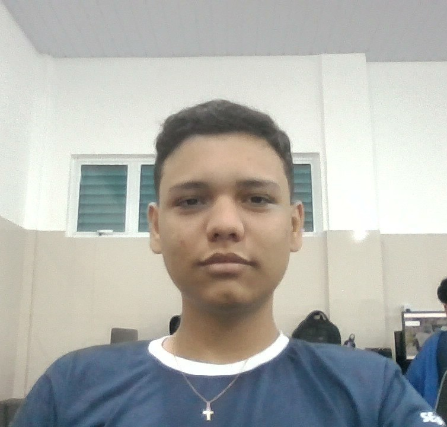

Técnico em Informática para Internet — SENAI
Formação integrada ao Ensino Médio com projetos de lógica, programação web, banco de dados e desenvolvimento de portfólios. Atuação em trabalhos interdisciplinares e resolução de problemas reais.

Desenvolvedor em formação — Técnico em Informática para Internet
Estudante dedicado, em busca de transformar o aprendizado em soluções reais. Tenho interesse por programação web, lógica e trabalho em equipe, e venho construindo minha trajetória com curiosidade, disciplina e vontade de evoluir.
Formação integrada ao Ensino Médio com projetos de lógica, programação web, banco de dados e desenvolvimento de portfólios. Atuação em trabalhos interdisciplinares e resolução de problemas reais.
Desempenho acadêmico consistente, participação em projetos e aprendizado contínuo com profissionais da área de tecnologia.
Atuação no atendimento ao público, organização das prateleiras e controle das vendas desde 2023. Uma experiência que me ensinou responsabilidade, comunicação, agilidade e a valorizar o esforço de quem trabalha todos os dias.
Conquista da medalha de bronze na Olimpíada Brasileira de Biologia, resultado de estudo e dedicação.
Classificado entre os 10 melhores estudantes da turma, com bom desempenho ao longo do Ensino Fundamental II.
Rua Dr. Antenor Neiva, 948
Disponível para contato online e presencial na região.
Ver no mapaChegamos ao fim de mais um ano, e, para mim, ao fim de uma etapa. Este é o meu último ano do Ensino Médio, e ele encerra um ciclo de muito aprendizado, esforço e crescimento.
Agradeço de todo coração às instituições que me acolheram, em especial ao SESI e ao SENAI, por me darem estrutura, oportunidades e um ambiente onde pude crescer como estudante e como pessoa.
Agradeço aos professores pela paciência, pelas explicações, pelos conselhos e por cada incentivo nos momentos de dúvida. Aos colegas, pela convivência, pelas conversas, pela ajuda e por todos os momentos que transformaram a rotina em algo leve. À minha família, pelo apoio constante em cada passo dessa caminhada.
Também sou grato por tudo o que aprendi construindo este portfólio: pesquisei, programei, errei, refiz e descobri como organizar ideias, resolver problemas e apresentar o meu trabalho. Cada página aqui é parte do que eu aprendi e do que quero levar comigo.
Levo as lições, as amizades e a vontade de continuar aprendendo. Muito obrigado a todos que fizeram parte dessa trajetória. Que venha o próximo capítulo!
— Pedro Paulo 💙❤️